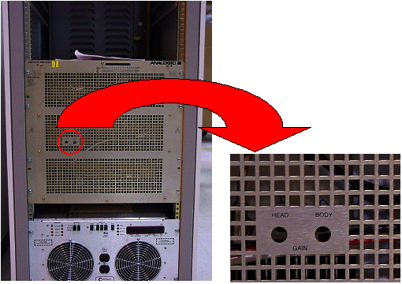

Proprietary to General Electric
Direction 5670000, Rev# 1
Optima MR450w 1.5T Service Methods
Module Version 1.0, Version Date 5/3/07
Proprietary to General Electric |
| Required Persons | Preliminary Reqs | Procedure | Finalization |
|---|---|---|---|
| 1 | Not Applicable | 90 mins | Not Applicable |
Refer to the Tools and Test Equipment Section below for equipment required to measure power with the RF Power Measurement Kit or refer to Alternate Equipment Setup. The RF Power Measurement Kit is the preferred method for RF power measurement.
| Item | Qty | Effectivity | Part# | Manufacturer | |
|---|---|---|---|---|---|
| 100 MHz Scope (equivalent or greater) | 1 | - | 46-183029P61 | - | |
| RF Power Measurement Kit | 1 | - | 46-317724G1 or G2 | - | |
| 50 ohm, 200 Watt, 30dB Attenuator (dummy load) | 1 | - | 46-317724P14 | - | |
| RF Test Cables Kit | 1 | - | 46-255816G1 | - | |
| Digital Multimeter (DMM) | 1 | - | 46-194427P49 | - | |
| DMM Test Cable - BNC to Banana (optional) | 1 | - | 2239139 | - | |
| Screwdriver, slotted (long & narrow) | 1 | - | - | - | |
| ||||
| POSSIBLE RF BURNS. | ||||
| POSSIBLE RF BURNS WHEN DISCONNECTING HELIAX CABLES FROM J3 OR J4 ON THE REAR OF THE SRFD2 MODULE. | ||||
| PREVENT POSSIBLE RF BURNS WHEN DISCONNECTING HELIAX CABLES FROM J3 OR J4 ON THE REAR OF THE SRFD2 MODULE BY VERIFYING THAT THE SYSTEM IS NOT MANUALLY PRESCANNING OR SCANNING. VERIFY THAT THE SCAN DESKTOP ICON DISPLAYS THE “IDLE” MESSAGE. |
Procedures describe in this document are:
| ||||
| POSSIBLE RF BURNS. | ||||
| POSSIBLE RF BURNS WHEN DISCONNECTING HELIAX CABLES FROM J3 OR J4 ON THE REAR OF THE SRFD2 MODULE. | ||||
| PREVENT POSSIBLE RF BURNS WHEN DISCONNECTING HELIAX CABLES FROM J3 OR J4 ON THE REAR OF THE SRFD2 MODULE BY VERIFYING THAT THE SYSTEM IS NOT MANUALLY PRESCANNING OR SCANNING. VERIFY THAT THE SCAN DESKTOP ICON DISPLAYS THE “IDLE” MESSAGE. |
| NOTE: | PROPERTY DAMAGE! PREVENT COIL AND ASSOCIATED SWITCH DAMAGE, BY REMOVING ALL PHANTOMS AND HARDWARE (I.E., HEAD COIL, SURFACE COIL...) FROM THE MAGNET BORE. |
Verify that the system is not scanning and that all coils have been removed from the magnet bore.
If the site is equipped with a UTNS3, then see Stopping and Starting UTNS3 to disable UTNS3. This does not apply to UTNS or UTNS2.
Disable RF on RF I/O
If the system has a Driver Module ((see Illustration 1)) the, disable faults by putting SW2 in the Down (TR Disable) Position.
Illustration 1: Driver Module Switches

If using the RF Power Measurement Kit then refer to the RF Power Measurement Kit laminated card set.
Look in the upper, right corner of each card and find the card labeled 72 (1.5T Body Output).
| NOTE: | The body RF output connection is no longer to the non-existent EFB unit, as the older RF Power Measurement Kit cards show, but instead to the J4 output on the rear of the SRFD2 Module. An RF adapter is provided in the RF Power Measurement Kit to connect between the HN J4 body RF output and the RF Power Measurement Kit 40 dB N-connector coupler. |
Configure the system as shown in the illustration on the card.
Confirm that the rotary attenuator is set to the correct position indicated on the card.
If using the wattmeter or scope (NOT the RF Power Measurement Kit) to measure power then refer to Alternate Equipment Setup for the proper system body configuration.
Prepare the system to scan in Body mode as shown in Table 1
Table 1: SCAN PROTOCOL: BODY MODE
|
Verify Body LED is illuminated on front of SRFD2 Module.
Enable RF on RF I/O.
[Manual Prescan][Scan TR]. Slowly increase TG to 200.
| NOTE: | Check the system center frequency NOW, especially if this is a new installation, and confirm that it consists of 8 digits and that it is correct. The RF amplifier will output a low and distorted RF waveform if center frequency is wrong due to a missing digit. |
| NOTE: | If the RF Amplifier trips, adjust the Body Gain pot counter clockwise to reduce the RF output power and then increase the TG. Repeat this process until TG = 200 and the body RF output power is 16kW (72dBm). |
| NOTE: | The Power Amplifier should be capable of 0.3dB to 0.4dB more than the required 72dBm RF Output. Improperly adjusted systems will trip if the gain is set above 72dBm creating a “Peak Power Fault”. |
Verify the Unblank LED on the front of the SRFD2 Module is ON.
Illustration 2: POT LOCATIONS ON SRFD2 MODULE
If using the RF Power Measurement Kit, refer to the specified number of divisions printed on the RF Power Measurement Kit card 72 (1.5T Body RF Output) needed to achieve 16kW of RF power output. Adjust the Body Gain pot on the front of the SRFD2 so that the RF waveform displayed on the scope meets, but does not exceed, this number of divisions. See Illustration 2.
If using the wattmeter procedure then read the wattmeter display and calculate the RF output power from the formula below. The dummy load and cable loss factor was determined from the procedure in Appendix F. Adjust the Body Gain pot on the front of the SRFD2 Module until the RF output calculated from the formula meets, and does not exceed, the 16kW (72dBm) specification. See Illustration 2.
Table 2: RF Power Measurement (in watts) Using Wattmeter And Formula
| Wattmeter reading (in watts) X dummy load and cable loss factor |
If using the oscilloscope procedure (NOT the RF Power Measurement Kit) then read the peak voltage (Vpeak) from the scope display and use the formula below or the Power Calculator Tool (located at E:\rf\power\pwrcalc.htm on the Service Methods CD-ROM) to calculate the RF output power. The dummy load and cable loss factors were determined from the procedure in Dummy Load and Cables Calibration. The scope correction factor was determined in Appendix D. Adjust the Body Gain pot on the front of the SRFD2 until the RF output calculated from the formula meets, and does not exceed, the 16kW (72dBm) specification. See Illustration 2.
Table 3: RF Power Measurement (in watts) Using Oscilloscope And Formula
 X dummy load and cable loss factor X dummy load and cable loss factor |
Decrease TG to 0 (zero). [Done].
Disable RF on RF I/O.
Replace the RF Body heliax cable.
| NOTE: | PROPERTY DAMAGE! PREVENT COIL AND ASSOCIATED SWITCH DAMAGE, BY REMOVING ALL PHANTOMS AND HARDWARE (I.E., HEAD COIL, SURFACE COIL...) FROM THE MAGNET BORE. |
Verify that the system is not scanning and that all coils have been removed from the magnet bore. See the two DANGER messages on this page.
Disable RF on RF I/O.
| ||||
| POSSIBLE RF BURNS. | ||||
| POSSIBLE RF BURNS WHEN DISCONNECTING HELIAX CABLES FROM J3 OR J4 ON THE REAR OF THE SRFD2 MODULE. | ||||
| PREVENT POSSIBLE RF BURNS WHEN DISCONNECTING HELIAX CABLES FROM J3 OR J4 ON THE REAR OF THE SRFD2 MODULE BY VERIFYING THAT THE SYSTEM IS NOT MANUALLY PRESCANNING OR SCANNING. VERIFY THAT THE SCAN DESKTOP ICON DISPLAYS THE “IDLE” MESSAGE. |
If using the RF Power Measurement Kit then refer to the RF Power Measurement Kit laminated card set.
Look in the upper, right corner of each card and find the card labeled 63 (1.5T Head Output).
| NOTE: | The head RF output connection is no longer to the non-existent EFB unit, as the reference cards in some of the older kits show, but instead to the J3 output on the rear of the SRFD2. |
Configure the system as shown in the illustration on the card.
Confirm that the rotary attenuator is set to the correct position indicated on the card.
If using the wattmeter or scope (NOT the RF Power Measurement Kit) to measure power, refer to (Alternate Equipment Setup) for the proper system head configuration.
Prepare the system to scan in Head mode per Table 4 .
Table 4: SCAN PROTOCOL: HEAD MODE
|
Verify Head LED is illuminated on front of SRFD2 Module.
| NOTE: | The Head Gain pot is directly affected by changes to the Body Gain pot. Adjust the Head Gain pot ONLY after completing final adjustment of the Body Gain pot. |
Enable R/F on RF I/O.
[Manual Prescan][Scan TR]. Increase TG to 200.
Verify the Unblank LED on the front of the SRFD2 Module is ON.
Illustration 3: Pot Locations On SRFD2 Amplifier

If using the RF Power Measurement Kit then refer to the specified number of divisions printed on the RF Power Measurement Kit card 63 (1.5T Head RF Output) needed to achieve 2kW of RF power output. Adjust the Head Gain pot on the front of the SRFD2 so that the RF waveform displayed on the scope meets, but does not exceed, this number of divisions. See Illustration 3.
If using the wattmeter procedure then read the wattmeter display and calculate the RF output power from the formula below. The cable loss factor was determined from the procedure in Dummy Load and Cables Calibration. Adjust the Head Gain pot on the front of the SRFD2 until the RF output calculated from the formula meets, and does not exceed, the 2kW (63dBm) specification. See Illustration 3.
Table 5: RF Power Measurement (in watts) Using Wattmeter And Formula
| Wattmeter reading (in watts) X cable loss factor |
If using the oscilloscope procedure (NOT the RF Power Measurement Kit) then read the peak voltage (Vpeak) from the scope display and use the formula below or the Power Calculator Tool (located at Power Calculator. to calculate the RF output power. The dummy load and cable loss factor was determined from the procedure in Dummy Load and Cable Calibration. The scope correction factor was determined in Scopes with Less Than 300 MHz Bandwidth. Adjust the Head Gain pot on the front of the SRFD2 module until the RF output calculated from the formula meets, and does not exceed, the 2kW (63dBm) specification. See Illustration 3.
Table 6: RF Power Measurement (in watts) Using Oscilloscope And Formula:
| X dummy load and cable loss factor |
Decrease TG to 0 (zero). [Done][End Exam].
Verify that the scan desktop icon is displaying the “Idle” message.
Disable RF on RF I/O.
Replace the RF Head Heliax cable.
Proceed to System Restoration.
No finalization steps.